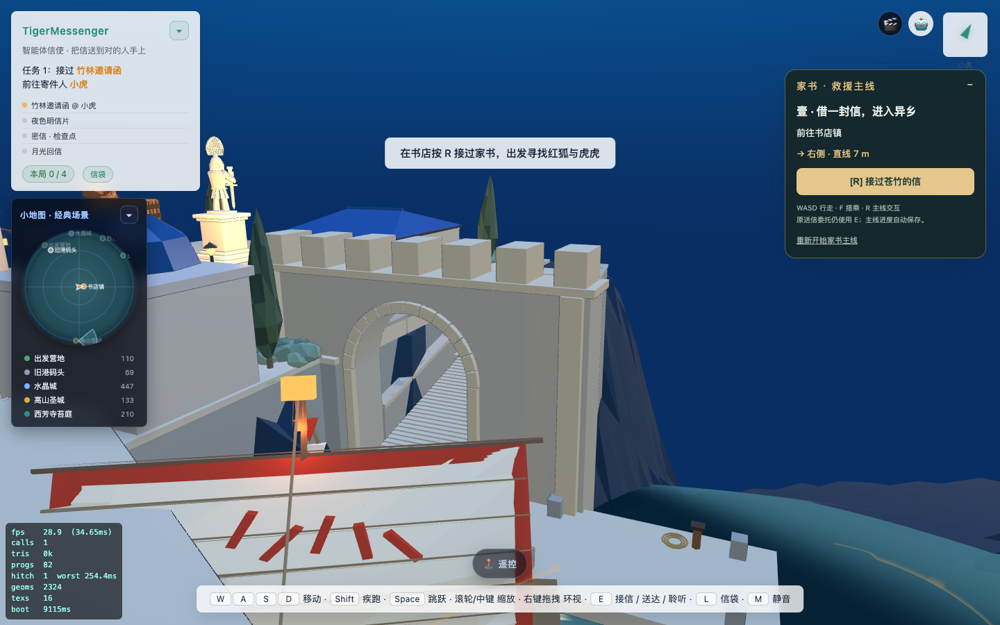
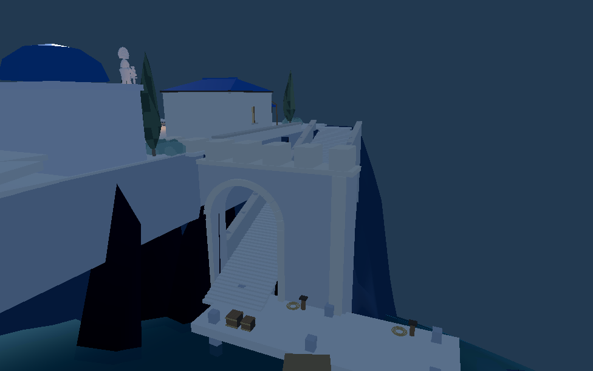

更新：台阶两侧连续挡土墙及压顶已接入，两端六处护墙碰撞检查通过。广场基座西边退让0.85米，减少门洞视线里的旧平台侵入。
已接入8931原游戏并同步Godot。真正挖空的4.4米宽门洞，拱顶高5.3米；原长阶梯中间加入2米深的平台。码头、台阶、平台与门洞共享最终海面适配后的高度。
进入原游戏 · Web门洞检查 · Godot实际碰撞检查 · Web原通路检查


两端20条门洞检测线无阻挡，侧墙有效阻挡，Godot平台有物理支撑。仍需完成真正转折通路、原士兵完整下船行走、木马高台及Blender细化；这不是完整战斗或目标图1:1验收。